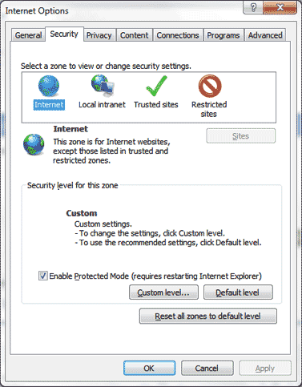
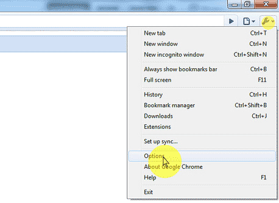

Indian Matrimonials - We Match Better |
Only in India
Call us On
1-800-419-6299
[Toll Free]
|
›› How do I enable JavaScript in my browser?
Jeevansathi.com has detected that your browser is not JavaScript enabled. As a result the site may not display and function as designed. To enable JavaScript follow the steps below that apply to the browser you are using
|
Following Steps |
||
Step 1 |
Step 2 |
Step 3 |
Determine what browser version is in use. * Select ‘Help’ from the top menu * Choose ‘About ’ |
Click on the browser name/version from the list below:
|
Follow the instructions mentioned below to enable JavaScript in your browser: |
| 1. Select Tools from the browser toolbar at the top of your screen. 2. Select Internet Options from the drop-down list. 3. Select the Security tab. 4. Click on the Custom Level button. 5. Scroll down to the section called Scripting. 6. Verify that Active scripting is enabled. If it is not, then click the circle next to Enable. Click OK. If you do not see the option to enable Active scripting, scroll down to Part II at the bottom of this window. 7. Click Yes. 8. Click OK to close the second window. 9. If this instructions window is still open, close it and click the Refresh button on your browser toolbar. JavaScript should now be enabled. |
| 1. Click Tools. 2. Click Options. 3. Click Security. 4. Click Internet. 5. Click Custom level… 6. Scroll down to Scripting and select the radio button to Enable or Disable it. You may also opt for IE7 to Prompt you to allow scripts to run. 7. Click OK, then OK again. |
| Top menu (if not visible, press alt key to make the top menu visible) > Tools > Internet Options
After clicking Internet Options the below configuration window will open. Click the Security tab to display the below configuration window.  Internet Options configuration window as shown above and then click the Custom Level button to open the “Security Settings – Internet Zone” details window as shown below. Once the drop down has been set to Medium click the Reset button to change the IE8 Security Settings to Medium level. After you click Reset a pop up warning will display as shown below. Apply the settings and press ok. Refresh your webpage or restart your browser (internet explorer 8) in order to make the new settings affective. This way you can enable or disable javascript in your microsoft internet explorer 8. |
| Top menu (if not visible, press alt key to make the top menu visible) > Tools > Internet Options
After clicking Internet Options the below configuration window will open. Click the Security tab to display the below configuration window. Internet Options configuration window as shown above and then click the Custom Level button to open the “Security Settings – Internet Zone” details window as shown below. Once the drop down has been set to Medium click the Reset button to change the IE9 Security Settings to Medium level. After you click Reset a pop up warning will display as shown below. Apply the settings and press ok. Refresh your webpage or restart your browser (internet explorer 9) in order to make the new settings affective. This way you can enable or disable javascript in your microsoft internet explorer 9. |
| 1. Open Mozilla Firefox. 2. Select Tools from the top menu 3. Choose Options 4. Choose Contents tab 5. Select the checkbox next to Enable JavaScript and click OK Close and re-open Firefox. |
| 1. Open Mozilla Firefox. 2. Select Tools from the top menu 3. Choose Options 4. Choose Contents tab 5. Select the checkbox next to Enable JavaScript and click OK |
| On the web browser menu click on the "Customize and control Google Chrome" and select "Options".  In the "Google Chrome Options" window select the "Under the Hood" tab. In the "Privacy" section click "Content settings..." button. In the "Content settings" window select the "JavaScript" tab. . In the "JavaScript" tab select "Allow all sites to run JavaScript (recommended)" Close the "Content Setting" window. Close the "Google Chrome Options" window. |
| Please keep in mind that upgrading your browser or installing new security software or security patches may affect your JavaScript settings. We recommend that you double-check that JavaScript is still enabled if you notice problems displaying the pages. Additionally, if your JavaScript setting is set to 'Prompt', you may encounter a warning about downloading potentially dangerous scripts from Jeevansathi.com If you are still experiencing problems viewing the website properly after ensuring that JavaScript is enabled in your browser, please check if you have any personal firewall or security software installed & alter their settings accordingly. |
| If the problem still persists, report to us at feedback@Jeevansathi.com or call us at (0120) 4393500 (10:00 AM to 6:00 PM) |